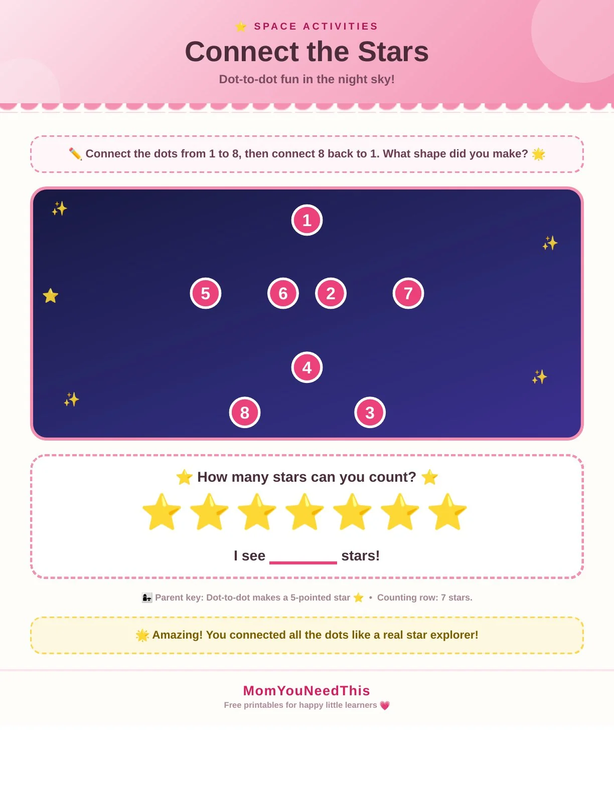

⭐✨ Stars Activities Twinkle, Twinkle, Little Learner
Stars light up the night sky and spark big wonder in little minds. These dreamy activities explore constellations, star shapes and the magic of looking up.
Quick Answer
This free printable stars activity introduces toddlers and preschoolers (ages 2–5) to what stars really are — enormous balls of glowing gas, so far away they look like dots — and to the connect-the-dots pictures people imagine in them, called constellations. Kids connect constellations, count stars, and learn that our own Sun is a star, just a close one. Download and print at home with no signup needed.
At a Glance
- Ages: Toddlers and preschoolers (ages 2–5)
- Activity: Connecting constellations; learning what stars really are
- Skills: Astronomy and counting
- Format: Printable worksheet (PDF)
- Cost: Free, no signup
Stars are the first astronomy lesson because they are the first sky a child loves. The ideas on this page are small but real: a star is a sun seen from unimaginably far away; the twinkle is Earth's air wobbling the light; and the pictures in the stars are ones people invented and named, which means your child is allowed to invent their own.
⭐✨ Explore Stars Activities
Connect star constellations, count twinkling stars, and learn what stars really are.
💡 How To Use This Activity
Print the star pages for a clear night: look up first and find one real constellation, or just the brightest star, then come inside and work through the sheets while the sky is still in their heads. A flashlight in a dark room keeps the stargazing going. The print button opens the full-size page in a new tab if you prefer to print from there.

🖨️ Download Your Free Stars Activities Printable
Connect star constellations, count twinkling stars, and learn what stars really are. Print it out, grab the crayons, and you're ready — no signup needed.
⬇️ Download Free Printable 🖨️ Print🎁 Free printable for toddlers & preschoolers
⭐ What Stars Really Are
A star is a giant ball of glowing-hot gas, burning far away in space. The Sun is a star — the closest one — which is why it looks big and bright and all the others look like sprinkles. On the clearest nights, your child can see a few thousand stars with just their eyes; there are more stars in the sky than grains of sand on every beach on Earth.
Stars twinkle because their light wiggles through moving air on its way to us — the star itself is steady. (Planets, which shine by reflecting sunlight from much closer, mostly do not twinkle, which is a real way to tell them apart.)
Constellations are connect-the-dots drawings people have imagined in the stars for thousands of years: hunters, bears, swans, and queens. The stars in a constellation are usually nowhere near each other in space — the picture exists only from where we stand. That is why making up your OWN constellation from a handful of bright stars is not cheating; it is exactly what the original stargazers did.
❓ Stars Activities FAQs
What activities are included in Stars Activities?
This page collects our free stars printables in one place: connecting simple constellations, counting stars, and learning what stars really are — including that the Sun is our nearest star. Download the printable below and start learning right away.
Are these activities really free?
Yes — every printable on MomYouNeedThis is 100% free to download and print. No signup, no payment, just tap the download button. Print two copies if your child wants to invent their own constellation on the second — that is an astronomically legitimate activity. Print two copies if your child wants to invent their own constellation on the second — that is an astronomically legitimate activity.
How do I use these activities with my child?
Pair the pages with a real clear night. Look up first: find the brightest star, or one constellation, and count how many stars you can see. Then come inside and work through the sheets while the sky is still in their heads. A flashlight in a dark room (or a colander held over one, for instant stars) keeps the stargazing going on cloudy nights.